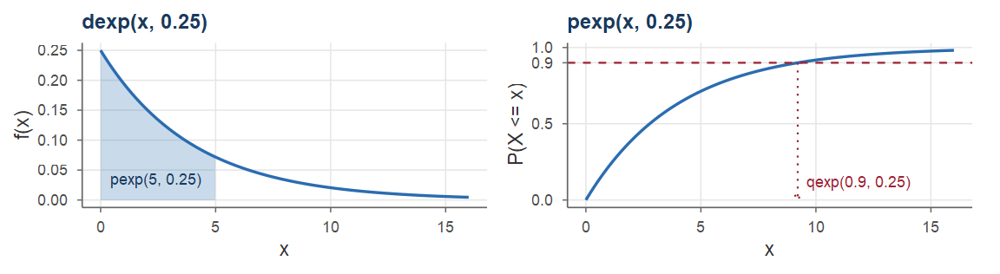
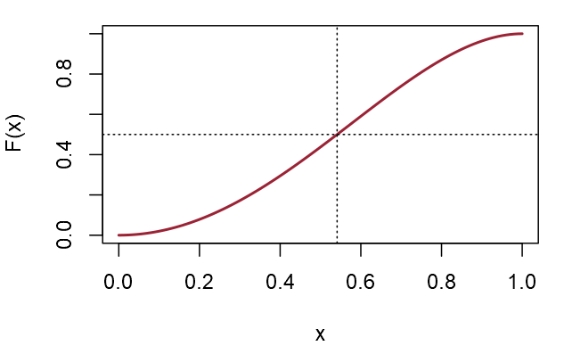
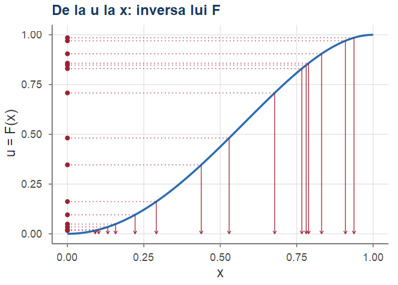
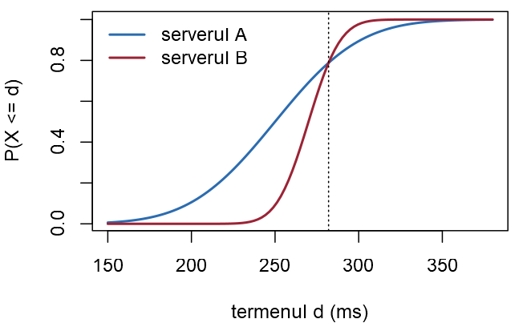
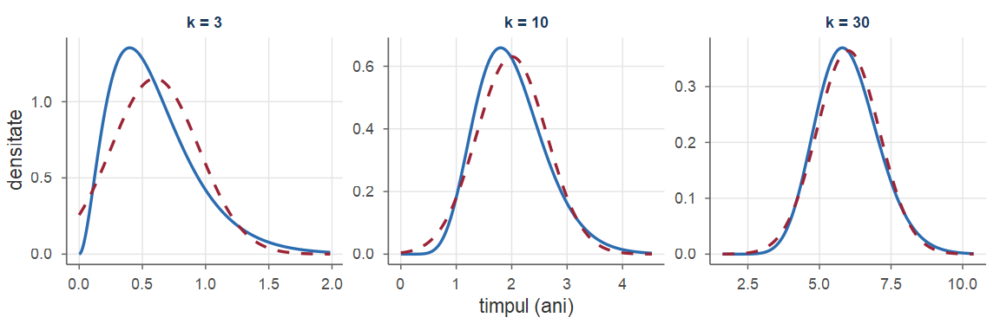

Probabilități și Statistică · Seminarul 5 (seminar și laborator)
Universitatea din București · Facultatea de Matematică și Informatică · 2026–2027
Încărcarea unui server, durata de viață a unui disc, timpul de răspuns al unui serviciu pot lua orice valoare dintr-un interval: sunt variabile aleatoare continue, descrise printr-o densitate, iar probabilitățile sunt arii. Ședința de astăzi urmărește un singur fir: un centru de date.
Fiecare exercițiu: Seminar rezolvarea matematică, apoi Laborator rezolvarea în R.
La sfârșitul ședinței studentul trebuie să poată:
d/p/q/r ale repartițiilor continue, integrarea numerică (integrate) și rezolvarea numerică a ecuațiilor (uniroot).Față de Seminarul 3 și Seminarul 4: funcția de masă devine densitate, iar sumele devin integrale (Cursul 4).
Repartițiile uzuale (Definițiile 1 din Cursul 5, 6 din Cursul 5, 12 din Cursul 5, 22 din Cursul 5; Propozițiile 2 din Cursul 5, 4 din Cursul 5, 7 din Cursul 5, 8 din Cursul 5, 23 din Cursul 5): \[ \begin{array}{l|llcc} &\text{densitatea }f(x)&F(x)=\PP(X\le x)&\text{media}&\text{varianța}\\ \hline \rule{0pt}{5mm}\Unif(a,b)&\frac{1}{b-a},\ \ a\le x\le b&\frac{x-a}{b-a},\ \ a\le x\le b&\frac{a+b}{2}&\frac{(b-a)^2}{12}\\[1.5mm] \Exp(\lambda)&\lambda e^{-\lambda x},\ \ x>0&1-e^{-\lambda x},\ \ x>0&\frac1\lambda&\frac1{\lambda^2}\\[1.5mm] \Norm(\mu,\sigma^2)&\frac{1}{\sigma\sqrt{2\pi}}\,e^{-(x-\mu)^2/(2\sigma^2)},\ \ x\in\R&\Phi\big(\frac{x-\mu}{\sigma}\big)&\mu&\sigma^2\\[1.5mm] \GammaD(\alpha,\lambda)&\frac{\lambda^\alpha}{\Gamma(\alpha)}\,x^{\alpha-1}e^{-\lambda x},\ \ x>0&\text{(numeric)}&\frac\alpha\lambda&\frac{\alpha}{\lambda^2} \end{array} \]
Universalitatea repartiției uniforme și metoda inversei (Teorema 5 din Cursul 5): dacă \(U\sim\Unif(0,1)\) și \(F\) este continuă și strict crescătoare, atunci \(F^{-1}(U)\) are funcția de repartiție \(F\); reciproc, \(F(X)\sim\Unif(0,1)\).
d/p/q/r (convenția din Seminarul 3): dunif(x, a, b), dexp(x, rate), dnorm(x, mean, sd), dgamma(x, shape, rate) — densitatea \(f(x)\); punif, …, pgamma — \(F(x)=\PP(X\le x)\); qunif, …, qgamma — cuantila \(F^{-1}(u)\); runif, …, rgamma — valori aleatoare (runif(n): \(n\) valori din \(\Unif(0,1)\)).integrate(f, a, b)$value — integrala \(\int_a^bf(x)\dd x\), numeric; f trebuie să lucreze cu vectori.uniroot(h, c(a, b))$root — o soluție a ecuației \(h(x)=0\) în \([a,b]\) (\(h(a)\) și \(h(b)\) au semne contrare); cuantila de ordin \(\alpha\) este soluția ecuației \(F(x)-\alpha=0\).curve(expr, from, to) — graficul unei expresii în x; add = TRUE îl suprapune peste cel existent.hist(x, freq = FALSE) — histograma normalizată (aria totală \(1\)), comparabilă cu densitatea.quantile(x, p) — cuantilele empirice; ecdf(x) — funcția de repartiție empirică.ifelse(cond, a, b) — funcții pe ramuri; matrix(v, ncol = k), apoi rowSums, pmin, pmax — calcule pe linii.dexp, pexp, qexp și trei capcaned nu mai este o probabilitate: dnorm, dexp etc. întorc valoarea densității, care poate fi mai mare decât \(1\); probabilitățile se obțin numai cu funcțiile p: \(\PP(a<X\le b)\) este pnorm(b, ...) - pnorm(a, ...).pnorm(x, mean = 250, sd = 40).pexp(x, rate = lambda), pgamma(x, shape = alpha, rate = lambda); dacă durata medie este \(m\), rata este \(\lambda=1/m\).
Gradul de încărcare al unui server (fracțiunea din capacitatea de calcul folosită într-un moment ales la întâmplare) este o variabilă aleatoare continuă \(X\) cu densitatea \(f(x)=c\,x\,(1-x^2)\) pentru \(0\le x\le1\) și \(f(x)=0\) altfel.
Determinați constanta \(c\). Pentru ce încărcare este densitatea maximă?
Calculați, prin integrarea densității, probabilitatea ca serverul să fie încărcat peste \(80\%\), apoi \(\PP(0.25<X<0.75)\).
Determinați funcția de repartiție \(F\) și recalculați cu ajutorul ei probabilitățile de la (b).
Determinați cuantila de ordin \(\alpha\), apoi mediana și cuartilele lui \(X\).
În R: verificați (a)–(c) cu integrate, reprezentați grafic \(f\) și \(F\), calculați cuantilele cu uniroot.
Seminar (a) O densitate trebuie să fie nenegativă și să aibă aria totală \(1\) (Propoziția 2 din Cursul 4). Pe \([0,1]\) avem \(x(1-x^2)\ge0\), deci prima condiție cere \(c\ge0\). Pentru a doua, densitatea este nulă în afara intervalului \([0,1]\), deci integrăm numai pe acest interval: \[ 1=\int_{-\infty}^{\infty}f(x)\dd x=c\int_0^1(x-x^3)\dd x=c\Big(\frac{x^2}{2}-\frac{x^4}{4}\Big)\Big|_0^1=c\Big(\frac12-\frac14\Big)=\frac c4, \] deci \(c=4\) și \(f(x)=4x-4x^3\) pe \([0,1]\).
Maximul: \(f'(x)=4-12x^2=0\) dă \(x=\frac{1}{\sqrt3}\approx0.577\), unde \(f\big(\frac1{\sqrt3}\big)=\frac{4}{\sqrt3}\cdot\frac23\approx1.54\). Serverul se află cel mai des în jurul unei încărcări de \(58\%\).
Valoarea \(1.54>1\) nu este o contradicție: densitatea nu este o probabilitate, ci o „probabilitate pe unitatea de lungime”.
Seminar (b) Probabilitățile sunt arii de sub graficul densității (Definiția 1 din Cursul 4). O primitivă a lui \(4x-4x^3\) este \(2x^2-x^4\), deci \[ \begin{aligned} \PP(X>0.8)&=\int_{0.8}^{1}(4x-4x^3)\dd x=\big(2x^2-x^4\big)\Big|_{0.8}^{1}=1-(1.28-0.4096)=0.1296,\\ \PP(0.25<X<0.75)&=\big(2x^2-x^4\big)\Big|_{0.25}^{0.75}=(1.125-0.3164)-(0.125-0.0039)=0.6875 . \end{aligned} \]
(c) Din Teorema 6 din Cursul 4, \(F(x)=\int_{-\infty}^xf(t)\dd t\): \(F(x)=0\) pentru \(x<0\), \(F(x)=1\) pentru \(x>1\), iar pentru \(0\le x\le1\) \[ F(x)=\int_0^x(4t-4t^3)\dd t=2x^2-x^4=1-(1-x^2)^2 . \] Atunci \(\PP(X>0.8)=1-F(0.8)=0.36^2=0.1296\) și \(\PP(0.25<X<0.75)=F(0.75)-F(0.25)=0.8086-0.1211=0.6875\), ca la (b): odată calculată \(F\), orice probabilitate se obține printr-o scădere.
Seminar (d) Cuantila de ordin \(\alpha\in(0,1)\) este soluția din \([0,1]\) a ecuației \(F(x)=\alpha\) (Definiția 7 din Cursul 4): \[ 1-(1-x^2)^2=\alpha\iff(1-x^2)^2=1-\alpha\iff1-x^2=\sqrt{1-\alpha}\iff x_\alpha=\sqrt{1-\sqrt{1-\alpha}} . \] (La al doilea pas am ales rădăcina pozitivă, deoarece \(1-x^2\ge0\) pe \([0,1]\).) Prin urmare \[ x_{1/4}=\sqrt{1-\sqrt{0.75}}\approx0.366,\quad x_{1/2}=\sqrt{1-\sqrt{0.5}}\approx0.541,\quad x_{3/4}=\sqrt{1-\sqrt{0.25}}\approx0.707 . \] Interpretare: în jumătate din timp încărcarea este sub \(54\%\), iar în jumătatea „din mijloc” a timpului este între \(37\%\) și \(71\%\).
Când ecuația \(F(x)=\alpha\) nu se poate rezolva de mână, o rezolvăm numeric — în R, cu uniroot.
integrateLaborator (e) integrate(f, a, b)$value calculează numeric aria de sub graficul lui f între a și b. Regăsim \(\frac1c=\frac14\) (integrala lui \(x(1-x^2)\)), aria totală \(1\) și probabilitățile \(0.1296\) și \(0.6875\) de la (b). Graficul: curve(f_inc(x), 0, 1); aria hașurată este \(\PP(X>0.8)\).
Laborator Funcția de repartiție se poate calcula tot numeric, ca arie de la \(0\) la \(x\); o comparăm cu formula de la (c). Funcția F_num primește un singur număr, de aceea o aplicăm cu sapply.
#> [,1] [,2] [,3] [,4]
#> formula 0.1211 0.4375 0.8086 0.8704
#> numeric 0.1211 0.4375 0.8086 0.8704Cele două linii coincid: \(F(0.25)\approx0.1211\), \(F(0.75)\approx0.8086\), iar \(1-F(0.8)=1-0.8704=0.1296\).
Funcțiile f_inc și F_inc sunt refolosite în toată ședința.
unirootLaborator Rezolvăm numeric \(F(x)-\alpha=0\) cu uniroot (pe \([0,1]\) funcția trece de la \(-\alpha<0\) la \(1-\alpha>0\), deci are o rădăcină), fără nicio formulă pentru \(F\). Valorile coincid cu formula de la (d): \(0.366\), \(0.541\), \(0.707\); încărcarea depășește \(88\%\) doar în \(5\%\) din timp.
#> [,1] [,2] [,3] [,4]
#> uniroot 0.366 0.5412 0.7071 0.8811
#> formula 0.366 0.5412 0.7071 0.8811
Fie \(X\) încărcarea serverului din Exercițiul 1, cu densitatea \(f(x)=4x(1-x^2)\) pe \([0,1]\).
Scrieți funcția de repartiție \(F\) și determinați inversa ei, \(F^{-1}(u)\), pentru \(u\in(0,1)\). Ce valori ale lui \(X\) corespund numerelor uniforme \(u=0.19\) și \(u=0.75\)?
Fie \(U\sim\Unif(0,1)\). Arătați direct, fără a invoca teorema, că variabila \(Y=F^{-1}(U)\) are funcția de repartiție \(F\).
În R: scrieți o funcție r_inc(n) care generează \(n\) valori ale lui \(X\) pornind de la runif; generați \(10^5\) valori și comparați histograma lor cu densitatea \(f\), cuantilele empirice cu cele teoretice și frecvențele evenimentelor din Exercițiul 1 (b) cu probabilitățile calculate acolo.
Verificați prin simulare și a doua parte a Teoremei 5 din Cursul 5: \(F(X)\sim\Unif(0,1)\).
Seminar (a) Din Exercițiul 1 (c), \(F(x)=\int_0^x4t(1-t^2)\dd t=1-(1-x^2)^2\) pentru \(x\in[0,1]\). Pe acest interval \(F\) este continuă și strict crescătoare, de la \(F(0)=0\) la \(F(1)=1\), deci are inversă. Pentru \(u\in(0,1)\) rezolvăm ecuația \(F(x)=u\) cu necunoscuta \(x\in[0,1]\): \[ 1-(1-x^2)^2=u\iff(1-x^2)^2=1-u\iff1-x^2=\sqrt{1-u}\iff x=\sqrt{1-\sqrt{1-u}}, \] adică \[ F^{-1}(u)=\sqrt{1-\sqrt{1-u}},\qquad u\in(0,1). \] Este exact calculul cuantilelor din Exercițiul 1 (d): inversa funcției de repartiție este funcția cuantilă. Valorile cerute: \[ F^{-1}(0.19)=\sqrt{1-\sqrt{0.81}}=\sqrt{1-0.9}=\sqrt{0.1}\approx0.316,\qquad F^{-1}(0.75)=\sqrt{1-\sqrt{0.25}}=\sqrt{0.5}\approx0.707 . \]
Seminar Metoda inversei (Teorema 5 din Cursul 5 a)): dacă \(U\sim\Unif(0,1)\), atunci \(F^{-1}(U)\) are aceeași repartiție ca \(X\).
Algoritmul are doi pași:
Numerele uniforme, așezate pe axa verticală, sunt „proiectate” prin graficul lui \(F\) pe axa orizontală. Acolo unde \(F\) crește repede (densitate mare), multe valori \(u\) ajung într-un interval scurt de valori \(x\).

Seminar (b) \(Y=\sqrt{1-\sqrt{1-U}}\) ia valori în \([0,1]\). Pentru \(x\in[0,1]\) transformăm inegalitatea \(Y\le x\) pas cu pas; toate cantitățile sunt nenegative, deci ridicarea la pătrat păstrează sensul inegalităților: \[ \begin{aligned} \sqrt{1-\sqrt{1-U}}\le x&\iff1-\sqrt{1-U}\le x^2\iff\sqrt{1-U}\ge1-x^2\\ &\iff1-U\ge(1-x^2)^2\iff U\le1-(1-x^2)^2 . \end{aligned} \] Membrul drept este \(F(x)\in[0,1]\), iar pentru o variabilă uniformă \(\PP(U\le t)=t\) dacă \(t\in[0,1]\) (Propoziția 2 din Cursul 5). Deci \[ \PP(Y\le x)=\PP\big(U\le F(x)\big)=F(x), \] adică \(Y\) are funcția de repartiție \(F\), deci densitatea \(f\). Am refăcut, pe acest exemplu, demonstrația Teoremei 5 din Cursul 5 a).
r_incLaborator (c) Transcriem cei doi pași ai algoritmului: runif(n) generează numerele uniforme, iar Finv_inc le transformă. Funcția r_inc este generatorul nostru pentru încărcarea serverului, în stilul funcțiilor rexp sau rnorm.
#> [1] 0.3162 0.7071Regăsim valorile \(0.316\) și \(0.707\) de la (a). Generatorul r_inc va fi refolosit la calculul mediei, al costului și în exercițiile pentru studiul individual.
Laborator Generăm \(10^5\) valori și desenăm histograma normalizată (freq = FALSE: aria totală a dreptunghiurilor este \(1\)), peste care suprapunem densitatea cu curve(..., add = TRUE). Histograma urmează îndeaproape curba roșie \(f(x)=4x(1-x^2)\): valorile generate au densitatea dorită.
Laborator Comparăm și numeric: cuantilele empirice (calculate cu quantile pe valorile simulate) cu cele teoretice, \(F^{-1}(\alpha)\), și frecvențele evenimentelor \(\{X>0.8\}\) și \(\{0.25<X<0.75\}\) cu probabilitățile lor.
#> 10% 25% 50% 75% 90%
#> empiric 0.2287 0.3654 0.5405 0.7065 0.8268
#> teoretic 0.2265 0.3660 0.5412 0.7071 0.8269
#> [1] 0.1295 0.6893Cuantilele empirice diferă de cele teoretice abia la a treia zecimală, iar frecvențele relative sunt apropiate de \(0.1296\) și \(0.6875\).
Laborator (d) Aplicăm funcția de repartiție valorilor simulate și verificăm că rezultatul este uniform pe \((0,1)\): cuantila de ordin \(\alpha\) a repartiției \(\Unif(0,1)\) este chiar \(\alpha\).
#> 10% 25% 50% 75% 90%
#> 0.1018 0.2492 0.4989 0.7492 0.8999Cuantilele empirice ale lui \(F(X)\) sunt apropiate de \(0.1\), \(0.25\), \(0.5\), \(0.75\), \(0.9\), în acord cu Teorema 5 din Cursul 5 b).
Cele două sensuri ale teoremei: \(F^{-1}(U)\) are funcția de repartiție \(F\) (simulare), iar \(F(X)\) este uniformă (verificare). Metoda inversei este reluată și dezvoltată în Seminarul 8.
Timpul de așteptare \(X\) (în minute) al unui job în coada unui cluster de calcul are funcția de repartiție \(F(x)=0\) pentru \(x<0\), \(F(x)=\frac{x^2}{5}\) pentru \(0\le x<1\), \(F(x)=\frac{2x-1}{5}\) pentru \(1\le x<3\) și \(F(x)=1\) pentru \(x\ge3\).
Verificați că \(F\) este funcția de repartiție a unei variabile continue și determinați densitatea \(f\).
Calculați \(\PP(X\le0.5)\), \(\PP(0.5<X\le2)\) și \(\PP(X>2)\).
Un job așteaptă deja de un minut. Care este probabilitatea să mai aștepte cel puțin încă un minut? Comparați cu \(\PP(X>1)\). Ce repartiție are \(X\), știind că \(X>1\)?
Determinați cuantila de ordin \(0.1\) și mediana; scrieți inversa \(F^{-1}\).
În R: definiți \(F\), \(f\) și \(F^{-1}\) cu ifelse, verificați (a)–(d) și simulați \(10^5\) valori prin metoda inversei.
Seminar (a) Verificăm proprietățile din Teorema 5 din Cursul 4. Limitele sunt \(0\) (pentru \(x<0\)) și \(1\) (pentru \(x\ge3\)). Continuitatea trebuie verificată în punctele în care se schimbă formula: \[ x=0:\ \ 0=\frac{0^2}{5};\qquad x=1:\ \ \frac{1^2}{5}=\frac15=\frac{2\cdot1-1}{5};\qquad x=3:\ \ \frac{2\cdot3-1}{5}=1 . \] Monotonia: pe fiecare ramură \(F\) este crescătoare. Deci \(F\) este o funcție de repartiție, fără salturi: \(\PP(X=x)=F(x)-F(x-)=0\) pentru orice \(x\). Densitatea se obține prin derivare pe fiecare ramură (Teorema 6 din Cursul 4 c)): \[ f(x)=\frac{2x}{5}\ \ \text{pentru } 0<x<1,\qquad f(x)=\frac25\ \ \text{pentru } 1<x<3,\qquad f(x)=0\ \ \text{altfel} \] (în punctele \(0\), \(1\), \(3\) valoarea lui \(f\) poate fi aleasă oricum). Verificare: \(\int_0^1\frac{2x}{5}\dd x+\int_1^3\frac25\dd x=\frac15+\frac45=1\). Densitatea crește liniar în primul minut, apoi rămâne constantă: așteptările foarte scurte sunt rare.
Seminar (b) Alegem de fiecare dată ramura pe care se află argumentul: \(\PP(X\le0.5)=F(0.5)=\frac{0.25}{5}=0.05\), \(\PP(X>2)=1-F(2)=1-\frac35=0.4\) și \(\PP(0.5<X\le2)=F(2)-F(0.5)=0.6-0.05=0.55\).
(c) Din definiția probabilității condiționate și din \(\{X>2\}\subseteq\{X>1\}\), \[ \PP(X>2\mid X>1)=\frac{\PP(X>2)}{\PP(X>1)}=\frac{1-F(2)}{1-F(1)}=\frac{0.4}{0.8}=0.5<0.8=\PP(X>1): \] un job care a așteptat deja un minut are șanse mai mici să mai aștepte încă un minut decât avea la sosire — variabila „ține minte” cât a trecut. Mai precis, pentru \(x\in[1,3]\), \[ \PP(X\le x\mid X>1)=\frac{F(x)-F(1)}{1-F(1)}=\frac{(2x-2)/5}{4/5}=\frac{x-1}{2}, \] funcția de repartiție a repartiției \(\Unif(1,3)\) (Propoziția 2 din Cursul 5): știind că \(X>1\), \(X\) este uniform pe \((1,3)\).
Seminar (d) Pentru a rezolva \(F(x)=\alpha\) trebuie să știm pe ce ramură se află soluția. Prima ramură acoperă nivelurile de la \(0\) la \(F(1)=\frac15\), a doua pe cele de la \(\frac15\) la \(1\).
În general, \[ F^{-1}(u)=\begin{cases}\sqrt{5u}, & 0<u\le\frac15,\\[1mm] \dfrac{5u+1}{2}, & \frac15<u<1.\end{cases} \] Cu această inversă pe ramuri putem simula timpii de așteptare prin metoda inversei, ca în Exercițiul 2.
ifelseLaborator (e) O funcție pe ramuri se scrie cu ifelse(conditie, valoare_daca_da, valoare_daca_nu), care lucrează element cu element. Regăsim \(0.05\), \(0.55\), \(0.4\); integrala densității pe \([0,3]\) este \(1\), pe \([0.5,2]\) tot \(0.55\); probabilitatea condiționată este \(0.5\).
F_job <- function(x) ifelse(x < 0, 0, ifelse(x < 1, x^2 / 5,
ifelse(x < 3, (2 * x - 1) / 5, 1)))
f_job <- function(x) ifelse(x < 0 | x > 3, 0,
ifelse(x < 1, 2 * x / 5, 2 / 5))
c(F_job(0.5), F_job(2) - F_job(0.5), 1 - F_job(2)) # (b)
c(integrate(f_job, 0, 3)$value, integrate(f_job, 0.5, 2)$value)
(1 - F_job(2)) / (1 - F_job(1)) # (c)#> [1] 0.05 0.55 0.40
#> [1] 1.00 0.55
#> [1] 0.5Laborator Simulăm cu inversa pe ramuri de la (d); pentru \(\PP(X>2\mid X>1)\) păstrăm numai joburile cu y > 1. Frecvențele sunt apropiate de \(0.05\), \(0.55\), \(0.4\), apoi de \(0.5\) și \(0.8\), iar cuantilele de \(0.707\) și \(1.75\).
Finv_job <- function(u) ifelse(u <= 1/5, sqrt(5 * u), (5 * u + 1) / 2)
set.seed(503)
y <- Finv_job(runif(1e5)) # 100 000 de timpi de așteptare
c(mean(y <= 0.5), mean(y > 0.5 & y <= 2), mean(y > 2))
c(mean(y[y > 1] > 2), mean(y > 1)) # P(X > 2 | X > 1) și P(X > 1)
rbind(empiric = quantile(y, c(0.1, 0.5)), teoretic = c(sqrt(0.5), 1.75))#> [1] 0.05027 0.54733 0.40240
#> [1] 0.5028 0.8004
#> 10% 50%
#> empiric 0.7046 1.757
#> teoretic 0.7071 1.750Fie \(X\) încărcarea serverului din Exercițiul 1, cu densitatea \(f(x)=4x(1-x^2)\) pe \([0,1]\).
Calculați \(\E[X]\), \(\Var(X)\) și \(\mathrm{SD}(X)\). Comparați media cu mediana.
Notăm \(\mu=\E[X]\) și \(\sigma=\mathrm{SD}(X)\). Calculați \(\PP(|X-\mu|\le\sigma)\) și \(\PP(|X-\mu|\le2\sigma)\).
Calculați media și varianța timpului de așteptare din Exercițiul 3. Regăsiți media cu formula \(\E[X]=\int_0^\infty\PP(X>x)\dd x\).
În R: scrieți o funcție care calculează media, varianța și abaterea standard ale unei densități prin integrare numerică și comparați cu rezultatele simulării.
Seminar (a) Din Definiția 8 din Cursul 4 și din formula de transfer cu \(g(x)=x^2\) (Teorema 10 din Cursul 4): \[ \begin{aligned} \E[X]&=\int_0^1x\cdot4x(1-x^2)\dd x=4\int_0^1(x^2-x^4)\dd x=4\Big(\frac13-\frac15\Big)=\frac{8}{15}\approx0.5333,\\ \E[X^2]&=\int_0^1x^2\cdot4x(1-x^2)\dd x=4\int_0^1(x^3-x^5)\dd x=4\Big(\frac14-\frac16\Big)=\frac13 . \end{aligned} \] Atunci (Definiția 11 din Cursul 4) \[ \Var(X)=\E[X^2]-(\E[X])^2=\frac13-\frac{64}{225}=\frac{11}{225}\approx0.0489,\qquad \mathrm{SD}(X)=\frac{\sqrt{11}}{15}\approx0.2211 . \] Încărcarea medie este de \(53.3\%\), cu abateri tipice de aproximativ \(22\) de puncte procentuale. Media (\(0.533\)) este puțin mai mică decât mediana (\(0.541\), Exercițiul 1): densitatea are coada mai lungă spre stânga.
Seminar (b) Avem \(\mu-\sigma\approx0.3122\) și \(\mu+\sigma\approx0.7544\), ambele în \([0,1]\). Cu \(F(x)=1-(1-x^2)^2\), \[ \begin{aligned} \PP(|X-\mu|\le\sigma)&=F(0.7544)-F(0.3122)=(1-0.3122^2)^2-(1-0.7544^2)^2\\ &\approx0.8146-0.1857=0.6289 . \end{aligned} \] La fel, \(\mu-2\sigma\approx0.0911\) și \(\mu+2\sigma\approx0.9755\), deci \[ \PP(|X-\mu|\le2\sigma)=F(0.9755)-F(0.0911)\approx0.9977-0.0165=0.9811 . \] Aproximativ \(63\%\) din probabilitate se află la cel mult o abatere standard de medie și \(98\%\) la cel mult două. Vom compara aceste valori cu cele ale repartiției normale în Exercițiul 9.
Seminar (c) Densitatea timpului de așteptare are două ramuri, deci fiecare integrală se desparte în două: \[ \begin{aligned} \E[X]&=\int_0^1x\cdot\frac{2x}{5}\dd x+\int_1^3x\cdot\frac25\dd x=\frac{2}{15}+\frac25\cdot\frac{9-1}{2}=\frac{2}{15}+\frac85=\frac{26}{15}\approx1.733,\\ \E[X^2]&=\int_0^1x^2\cdot\frac{2x}{5}\dd x+\int_1^3x^2\cdot\frac25\dd x=\frac{1}{10}+\frac25\cdot\frac{27-1}{3}=\frac1{10}+\frac{52}{15}=\frac{107}{30}, \end{aligned} \] deci \(\Var(X)=\frac{107}{30}-\frac{676}{225}=\frac{253}{450}\approx0.5622\) și \(\mathrm{SD}(X)\approx0.750\) minute.
Verificare cu Propoziția 9 din Cursul 4 (\(X\ge0\), iar \(\PP(X>x)=1-F(x)\) este nulă pentru \(x\ge3\)): \[ \E[X]=\int_0^1\Big(1-\frac{x^2}{5}\Big)\dd x+\int_1^3\frac{6-2x}{5}\dd x=\Big(1-\frac1{15}\Big)+\frac15\big(6x-x^2\big)\Big|_1^3=\frac{14}{15}+\frac45=\frac{26}{15}. \]
medie_var_contLaborator (d) În Exercițiul 1 din Seminarul 4 am scris medie_var pentru repartiții discrete, cu sum(x * p); varianta continuă înlocuiește sumele cu integrale numerice. Regăsim \(\frac{8}{15}\approx0.5333\), \(\frac{11}{225}\approx0.0489\) și \(0.2211\) pentru încărcare, respectiv \(1.733\), \(0.5622\) și \(0.750\) pentru timpul de așteptare.
medie_var_cont <- function(f, a, b) { # f = densitatea, pe [a, b]
m <- integrate(function(x) x * f(x), a, b)$value # E[X]
m2 <- integrate(function(x) x^2 * f(x), a, b)$value # E[X^2]
c(medie = m, varianta = m2 - m^2, sd = sqrt(m2 - m^2))
}
mv <- medie_var_cont(f_inc, 0, 1) # încărcarea serverului
rbind(incarcare = mv, asteptare = medie_var_cont(f_job, 0, 3))#> medie varianta sd
#> incarcare 0.5333 0.04889 0.2211
#> asteptare 1.7333 0.56222 0.7498Laborator Prima linie confirmă \(0.6289\) și \(0.9811\) de la (b). Ultimul tabel: media, varianța și abaterea standard ale valorilor simulate (x cu r_inc, y cu Finv_job), apropiate de cele teoretice.
m <- mv[["medie"]]; s <- mv[["sd"]]
c(F_inc(m + s) - F_inc(m - s), F_inc(m + 2 * s) - F_inc(m - 2 * s))
set.seed(504)
x <- r_inc(1e5); y <- Finv_job(runif(1e5)) # încărcări; timpi de așteptare
c(mean(abs(x - m) <= s), mean(abs(x - m) <= 2 * s)) # (b), simulat
rbind(x = c(mean(x), var(x), sd(x)), y = c(mean(y), var(y), sd(y)))#> [1] 0.6289 0.9811
#> [1] 0.6307 0.9813
#> [,1] [,2] [,3]
#> x 0.5334 0.04884 0.2210
#> y 1.7314 0.56071 0.7488Furnizorul de servicii cloud facturează serverul din Exercițiul 1 pentru fiecare oră, în funcție de încărcarea \(X\) din ora respectivă: \(2\) lei dacă \(X\le0.5\), iar dacă \(X>0.5\) se adaugă câte \(8\) lei pentru fiecare unitate de încărcare peste prag. Costul orar este deci \(C=g(X)\), cu \(g(x)=2\) pentru \(x\le0.5\) și \(g(x)=2+8\,(x-0.5)\) pentru \(x>0.5\), adică \(g(x)=2+8\max(x-0.5,\,0)\).
Calculați costul mediu \(\E[C]\) cu formula de transfer și comparați-l cu \(g(\E[X])\).
Calculați \(\PP(C=2)\) și \(\PP(C>3)\). Este \(C\) o variabilă aleatoare continuă?
Un abonament alternativ costă \(3\) lei pe oră, indiferent de încărcare. Care variantă este mai ieftină în medie? În ce proporție din ore tariful variabil este mai scump decât abonamentul?
În R: calculați \(\E[C]\) și \(\mathrm{SD}(C)\) prin integrare numerică și verificați (a)–(c) prin simulare.
Seminar (a) Formula de transfer (Teorema 10 din Cursul 4) cere densitatea lui \(X\), nu pe cea a lui \(C\): \[ \E[C]=\int_0^1\big(2+8\max(x-0.5,\,0)\big)f(x)\dd x=2\int_0^1f(x)\dd x+8\int_{0.5}^1(x-0.5)\,f(x)\dd x . \] Prima integrală este \(1\) (aria totală), iar în a doua am păstrat numai intervalul \([0.5,1]\), pe care \(\max(x-0.5,0)=x-0.5\). Cum \((x-0.5)(4x-4x^3)=4x^2-4x^4-2x+2x^3\), \[ \int_{0.5}^1(x-0.5)f(x)\dd x=\Big(\frac{4x^3}{3}-\frac{4x^5}{5}-x^2+\frac{x^4}{2}\Big)\Big|_{0.5}^{1}=\frac{1}{30}-\Big(-\frac{37}{480}\Big)=\frac{53}{480}\approx0.1104, \] deci \(\E[C]=2+8\cdot\frac{53}{480}=2+\frac{53}{60}\approx2.883\) lei. În schimb, costul corespunzător încărcării medii este \(g(\E[X])=g\big(\frac{8}{15}\big)=2+8\big(\frac{8}{15}-\frac12\big)\approx2.267\) lei: \(\E[g(X)]\ne g(\E[X])\). Costul mediu este determinat de orele aglomerate, pe care încărcarea medie le „ascunde”.
Seminar (b) Costul este exact \(2\) lei ori de câte ori încărcarea nu depășește pragul: \[ \PP(C=2)=\PP(X\le0.5)=F(0.5)=1-(1-0.25)^2=1-0.5625=0.4375 . \] Cum \(\PP(C=2)>0\), variabila \(C\) nu este continuă (Propoziția 3 din Cursul 4); nu este nici discretă, deoarece peste \(2\) lei ia toate valorile din \((2,6]\). Este o variabilă mixtă, ca în Exemplul 5 din Cursul 4; formula de transfer s-a aplicat variabilei continue \(X\), deci calculul de la (a) este corect. Apoi \[ \PP(C>3)=\PP\big(2+8(X-0.5)>3\big)=\PP(X>0.625)=(1-0.625^2)^2=0.6094^2\approx0.3713 . \]
(c) În medie, tariful variabil costă \(2.883\) lei pe oră, mai puțin decât abonamentul de \(3\) lei (economie medie de aproximativ \(0.117\) lei pe oră). Totuși, în \(37\%\) din ore tariful variabil este mai scump decât abonamentul (și poate ajunge la \(g(1)=6\) lei): alegerea depinde și de cât de mult contează variabilitatea costului, nu numai de medie.
Laborator (d) \(g\) se scrie cu pmax; pentru \(\mathrm{SD}(C)\) calculăm numeric și \(\E[C^2]=\int g(x)^2f(x)\dd x\). Obținem \(\E[C]\approx2.883\) (față de \(g(\E[X])\approx2.267\)) și \(\mathrm{SD}(C)\approx1.07\) lei; simularea confirmă și \(0.4375\), \(0.3713\).
g <- function(x) 2 + 8 * pmax(x - 0.5, 0) # costul orar, în lei
EC <- integrate(function(x) g(x) * f_inc(x), 0, 1)$value # E[C]
EC2 <- integrate(function(x) g(x)^2 * f_inc(x), 0, 1)$value # E[C^2]
c(E_C = EC, g_medie = g(8 / 15), SD_C = sqrt(EC2 - EC^2))
set.seed(505); cost <- g(r_inc(1e5)) # costurile a 100 000 de ore
c(medie = mean(cost), sd = sd(cost), P_2 = mean(cost == 2),
P_peste_3 = mean(cost > 3))#> E_C g_medie SD_C
#> 2.883 2.267 1.074
#> medie sd P_2 P_peste_3
#> 2.8861 1.0737 0.4356 0.3737Un sistem de jurnalizare înregistrează momentul fiecărui eveniment rotunjit la cea mai apropiată secundă. Eroarea de rotunjire \(E\) (momentul înregistrat minus momentul real, în secunde) este repartizată uniform pe \((-0.5,\,0.5)\).
Scrieți densitatea și funcția de repartiție ale lui \(E\). Calculați \(\PP(|E|\le0.1)\) și \(\PP(E>0.3)\).
Calculați \(\E[E]\), \(\mathrm{SD}(E)\) și eroarea absolută medie \(\E[|E|]\).
Știind că un moment a fost rotunjit în sus (\(E>0\)), care este probabilitatea ca eroarea să depășească \(0.3\) secunde? Ce repartiție are \(E\), știind că \(E>0\)?
Durata dintre două evenimente, calculată ca diferența momentelor înregistrate, are eroarea \(D=E_2-E_1\), cu \(E_1\), \(E_2\) erorile celor două marcaje, presupuse independente. Calculați \(\E[D]\) și \(\mathrm{SD}(D)\).
În R: verificați (a)–(d) simulând momente rotunjite cu round; estimați \(\PP(|D|>0.5)\); histograma lui \(D\).
Seminar (a) \(E\sim\Unif(a,b)\) cu \(a=-0.5\), \(b=0.5\), deci \(b-a=1\). Din Definiția 1 din Cursul 5 și Propoziția 2 din Cursul 5, \(f(x)=1\) pentru \(-0.5\le x\le0.5\) (și \(0\) altfel), iar \(F(x)=\frac{x-a}{b-a}=x+0.5\) pentru \(x\in[-0.5,\,0.5]\). Pentru repartiția uniformă probabilitatea unui subinterval este lungimea lui împărțită la lungimea totală: \[ \PP(|E|\le0.1)=\PP(-0.1\le E\le0.1)=\frac{0.2}{1}=0.2,\qquad \PP(E>0.3)=\frac{0.5-0.3}{1}=0.2 . \]
(b) Din Propoziția 4 din Cursul 5, \[ \E[E]=\frac{a+b}{2}=0,\qquad \Var(E)=\frac{(b-a)^2}{12}=\frac1{12}\approx0.0833,\qquad \mathrm{SD}(E)=\frac{1}{\sqrt{12}}\approx0.2887\text{ s}. \] Rotunjirea nu introduce o eroare sistematică (media este zero), dar eroarea tipică este de aproape \(0.3\) secunde.
Seminar (b) Eroarea absolută medie se calculează cu formula de transfer, \(g(x)=|x|\) (Teorema 10 din Cursul 4); funcția \(|x|\) este pară, deci integrăm pe jumătate din interval și dublăm: \[ \E[|E|]=\int_{-0.5}^{0.5}|x|\cdot1\dd x=2\int_0^{0.5}x\dd x=2\cdot\frac{0.5^2}{2}=0.25\text{ s}. \]
(c) Deoarece \(\{E>0.3\}\subseteq\{E>0\}\), \(\PP(E>0.3\mid E>0)=\frac{\PP(E>0.3)}{\PP(E>0)}=\frac{0.2}{0.5}=0.4\). Mai general, pentru \(x\in[0,0.5]\), \[ \PP(E\le x\mid E>0)=\frac{\PP(0<E\le x)}{\PP(E>0)}=\frac{x}{0.5}=\frac{x-0}{0.5-0}, \] adică funcția de repartiție a repartiției \(\Unif(0,0.5)\): o variabilă uniformă, condiționată să se afle într-un subinterval, este uniformă pe acel subinterval (am întâlnit același fenomen în Exercițiul 3 (c)).
Seminar (d) Din liniaritatea mediei, \(\E[D]=\E[E_2]-\E[E_1]=0\). Pentru varianță folosim Propoziția 12 din Cursul 4: \(\Var(-E_1)=(-1)^2\Var(E_1)\), iar pentru variabile independente varianțele se adună: \[ \Var(D)=\Var(E_2)+\Var(-E_1)=\frac1{12}+\frac1{12}=\frac16,\qquad \mathrm{SD}(D)=\frac{1}{\sqrt6}\approx0.408\text{ s}. \] Atenție: la diferența a două variabile independente varianțele tot se adună — două erori nu se compensează, ci se cumulează.
\(D\) ia valori în \((-1,1)\), dar nu mai este uniformă; repartiția ei exactă cere repartiția comună a perechii \((E_1,E_2)\), subiect al Seminarul 6, așa că deocamdată o studiem prin simulare.
Laborator (e) Exact: punif. Simulare: generăm momente reale și le rotunjim. Frecvențele sunt apropiate de \(0.2\), \(0.2\), \(0.4\), iar media, abaterea standard și \(\E[|E|]\) simulate de \(0\), \(0.2887\), \(0.25\).
c(punif(0.1, -0.5, 0.5) - punif(-0.1, -0.5, 0.5), # P(|E| <= 0.1)
1 - punif(0.3, -0.5, 0.5)) # P(E > 0.3)
set.seed(506)
t_real <- runif(1e5, 0, 3600) # momente reale (secunde)
E <- round(t_real) - t_real # erorile de rotunjire
c(mean(abs(E) <= 0.1), mean(E > 0.3), mean(E[E > 0] > 0.3))
c(medie = mean(E), sd = sd(E), abs_medie = mean(abs(E)))#> [1] 0.2 0.2
#> [1] 0.1995 0.1981 0.3963
#> medie sd abs_medie
#> -0.0007775 0.2884159 0.2498531Laborator Pentru (d) generăm perechi de momente: media și abaterea standard sunt apropiate de \(0\) și \(0.408\). Histograma lui \(D\) (hist(D, freq = FALSE)) are formă de triunghi; curba roșie, curve(1 - abs(x), add = TRUE), este densitatea \(1-|d|\) pe \((-1,1)\), obținută prin calcul în Seminarul 6. Cu ea, \(\PP(|D|>0.5)\) este aria a două triunghiuri mici, \(2\cdot\frac{0.5\cdot0.5}{2}=0.25\).
Durata de viață \(T\) (în ani) a unui disc dintr-un centru de date este repartizată exponențial, cu media de \(4\) ani; discurile se defectează independent unele de altele.
Determinați rata \(\lambda\) și calculați \(\PP(T\le1)\), \(\PP(T>5)\) și \(\PP(2<T\le6)\).
Determinați mediana lui \(T\) și garanția \(g\) pentru care cel mult \(10\%\) dintre discuri se defectează în garanție.
Un volum fără redundanță folosește \(4\) discuri și este pierdut la prima defectare a unui disc (sistem în serie); durata lui de viață este \(M=\min(T_1,T_2,T_3,T_4)\). Determinați repartiția lui \(M\), media și \(\PP(M>1)\).
Un volum în oglindă folosește \(2\) discuri cu același conținut și este pierdut numai când ambele s-au defectat (sistem în paralel): \(W=\max(T_1,T_2)\). Determinați funcția de repartiție a lui \(W\), \(\PP(W>5)\) și \(\E[W]\).
În R: verificați (a)–(b) cu pexp și qexp, iar (c)–(d) prin simulare cu rexp.
Seminar (a) Pentru \(T\sim\Exp(\lambda)\) media este \(\frac1\lambda\) (Propoziția 8 din Cursul 5), deci \(\frac1\lambda=4\) și \(\lambda=0.25\) defectări pe an. Din Propoziția 7 din Cursul 5, \(F(t)=1-e^{-t/4}\) și \(\PP(T>t)=e^{-t/4}\) pentru \(t\ge0\): \[ \begin{aligned} \PP(T\le1)&=1-e^{-0.25}\approx0.2212,\qquad \PP(T>5)=e^{-1.25}\approx0.2865,\\ \PP(2<T\le6)&=F(6)-F(2)=e^{-0.5}-e^{-1.5}\approx0.6065-0.2231=0.3834 . \end{aligned} \] Mai mult de o cincime dintre discuri se defectează în primul an, deși durata medie este de \(4\) ani.
(b) Cuantila de ordin \(\alpha\) rezolvă \(1-e^{-\lambda x}=\alpha\), adică \(e^{-\lambda x}=1-\alpha\), deci \(x_\alpha=-\frac{\ln(1-\alpha)}{\lambda}\). Mediana este \(x_{1/2}=4\ln2\approx2.773\) ani: jumătate dintre discuri se defectează înainte de \(2.8\) ani, mult sub media de \(4\) ani (densitatea exponențială are o coadă lungă spre dreapta). Garanția este cuantila de ordin \(0.1\): \[ \PP(T\le g)=0.1\iff g=-4\ln0.9\approx0.421\text{ ani}\quad(\text{aproximativ }5\text{ luni}). \]
Seminar (c) Volumul funcționează la momentul \(t\) dacă toate cele patru discuri funcționează. Discurile fiind independente, probabilitățile se înmulțesc: \[ \PP(M>t)=\PP(T_1>t,\,T_2>t,\,T_3>t,\,T_4>t)=\big(e^{-\lambda t}\big)^4=e^{-4\lambda t}=e^{-t},\qquad t\ge0 . \] Aceasta este funcția de supraviețuire a repartiției \(\Exp(4\lambda)=\Exp(1)\). Deci \(M\sim\Exp(1)\), cu \[ \E[M]=1\text{ an},\qquad \PP(M>1)=e^{-1}\approx0.3679 . \] Minimul a \(n\) variabile independente \(\Exp(\lambda)\) este \(\Exp(n\lambda)\): ratele se adună, iar durata medie se împarte la \(n\). Un volum cu patru discuri fără redundanță trăiește în medie de patru ori mai puțin decât un singur disc.
Seminar (d) Volumul în oglindă este pierdut până la momentul \(t\) dacă ambele discuri s-au defectat până atunci: \[ F_W(t)=\PP(W\le t)=\PP(T_1\le t)\,\PP(T_2\le t)=\big(1-e^{-t/4}\big)^2,\qquad t\ge0 . \] Atunci \(\PP(W>5)=1-\big(1-e^{-1.25}\big)^2=1-0.7135^2\approx0.4909\), față de \(0.2865\) pentru un singur disc. Pentru medie folosim Propoziția 9 din Cursul 4 (\(W\ge0\)) și \(\int_0^\infty e^{-ct}\dd t=\frac1c\): \[ \E[W]=\int_0^\infty\PP(W>t)\dd t=\int_0^\infty\Big(1-\big(1-e^{-t/4}\big)^2\Big)\dd t=\int_0^\infty\big(2e^{-t/4}-e^{-t/2}\big)\dd t=2\cdot4-2=6\text{ ani}. \] Al doilea disc prelungește durata medie de la \(4\) la \(6\) ani, nu la \(8\): după prima defectare volumul rămâne cu un singur disc. \(W\) nu este o variabilă exponențială, deoarece \(\PP(W>t)\) nu are forma \(e^{-ct}\).
pexp, qexp, rexpLaborator (e) pexp(t, rate) este funcția de repartiție, iar qexp(alfa, rate) cuantila: regăsim \(0.2212\), \(0.2865\), \(0.3834\), mediana \(2.773\) și garanția \(0.421\) ani. Apoi simulăm \(10^5\) volume: matrix(..., ncol = 4) are câte o linie pentru fiecare volum și câte o coloană pentru fiecare disc, iar pmin și pmax calculează minimul, respectiv maximul, pe fiecare linie.
lam <- 1 / 4 # rata: defectări pe an
c(pexp(1, lam), 1 - pexp(5, lam), pexp(6, lam) - pexp(2, lam)) # (a)
qexp(c(0.5, 0.1), lam) # (b): mediana și garanția
set.seed(507); B <- 1e5
D <- matrix(rexp(4 * B, lam), ncol = 4) # B volume a câte 4 discuri
M <- pmin(D[, 1], D[, 2], D[, 3], D[, 4]) # prima defectare (serie)
W <- pmax(D[, 1], D[, 2]) # ultima din două (oglindă)#> [1] 0.2212 0.2865 0.3834
#> [1] 2.7726 0.4214Laborator Valorile simulate sunt apropiate de cele teoretice: \(\E[M]=1\), \(\PP(M>1)\approx0.368\), \(\PP(W>5)\approx0.491\), \(\E[W]=6\). Histograma minimului urmează densitatea \(\Exp(1)\), desenată cu curve(dexp(x, 4 * lam), add = TRUE).
Continuăm cu discul din Exercițiul 7: \(T\sim\Exp(\lambda)\), cu \(\lambda=0.25\) pe an.
Un disc funcționează deja de \(3\) ani. Care este probabilitatea să mai funcționeze cel puțin încă \(2\) ani? Comparați cu probabilitatea ca un disc nou să funcționeze cel puțin \(2\) ani.
Ce repartiție are durata de viață rămasă, \(T-s\), a unui disc care a funcționat deja \(s\) ani? Cât este durata medie rămasă?
Pentru comparație, fie \(V\sim\Unif(0,8)\) o durată de viață cu aceeași medie, de \(4\) ani. Calculați \(\PP(V>5\mid V>3)\) și \(\PP(V>2)\).
Discurile sunt verificate o dată pe an, la sfârșitul fiecărui an de funcționare. Fie \(N\) numărul verificării la care discul este găsit defect (\(N=k\) dacă \(k-1<T\le k\)). Determinați repartiția lui \(N\), \(\PP(N=3)\) și \(\E[N]\); comparați \(\E[N]\) cu \(\E[T]\).
În R: verificați (a)–(d) prin simulare.
Seminar (a) Știm că \(T>3\) și cerem \(T>5\). Cum \(\{T>5\}\subseteq\{T>3\}\) și \(\PP(T>t)=e^{-\lambda t}\), \[ \PP(T>5\mid T>3)=\frac{\PP(T>5\text{ și }T>3)}{\PP(T>3)}=\frac{\PP(T>5)}{\PP(T>3)}=\frac{e^{-1.25}}{e^{-0.75}}=e^{-0.5}\approx0.6065 . \] Pentru un disc nou, \(\PP(T>2)=e^{-0.25\cdot2}=e^{-0.5}\approx0.6065\): cele două probabilități coincid.
Un disc vechi de \(3\) ani are exact aceleași șanse de a mai funcționa \(2\) ani ca un disc nou: este proprietatea lipsei de memorie (Definiția 9 din Cursul 5, Teorema 10 din Cursul 5 a)): \[ \PP(T>s+t\mid T>s)=\PP(T>t)\qquad\text{pentru orice } s,t\ge0 . \]
Seminar (b) Același calcul, pentru \(s,t\ge0\) oarecare: \[ \PP(T-s>t\mid T>s)=\frac{\PP(T>s+t)}{\PP(T>s)}=\frac{e^{-\lambda(s+t)}}{e^{-\lambda s}}=e^{-\lambda t}. \] Aceasta este funcția de supraviețuire a repartiției \(\Exp(\lambda)\): știind că discul a funcționat \(s\) ani, durata rămasă este tot \(\Exp(\lambda)\), oricare ar fi \(s\).
În particular, durata medie rămasă este \(\frac1\lambda=4\) ani, la fel pentru un disc nou și pentru unul vechi de \(10\) ani.
Modelul exponențial descrie deci componente care se defectează „accidental”, nu prin uzură.
Seminar (c) Pentru \(V\sim\Unif(0,8)\), \(\PP(V>v)=\frac{8-v}{8}\), deci \[ \PP(V>5\mid V>3)=\frac{3/8}{5/8}=0.6<0.75=\PP(V>2). \] O durată de viață uniformă „îmbătrânește”: un disc vechi are șanse mai mici decât unul nou. La fel se întâmplă cu timpul de așteptare din Exercițiul 3 (c), unde \(\PP(X>2\mid X>1)=0.5<0.8=\PP(X>1)\). Egalitatea de la (a) este specifică repartiției exponențiale (Teorema 10 din Cursul 5 b)).
(d) \(N\) ia valorile \(1,2,3,\dots\) și \[ \PP(N=k)=\PP(k-1<T\le k)=e^{-\lambda(k-1)}-e^{-\lambda k}=\big(e^{-\lambda}\big)^{k-1}\big(1-e^{-\lambda}\big),\qquad k\ge1 . \] Cu \(p=1-e^{-\lambda}=1-e^{-0.25}\approx0.2212\) avem \(\PP(N=k)=(1-p)^{k-1}p\), deci \(N\sim\Geom(p)\) (Definiția 13 din Cursul 3).
Seminar Interpretare. Fiecare an este o „încercare”, iar „succesul” este defectarea discului în acel an; din lipsa de memorie, un disc care funcționează la începutul anului se defectează în cursul lui cu aceeași probabilitate \(p=\PP(T\le1)\), indiferent de vârstă. Atunci \[ \PP(N=3)=e^{-0.5}\big(1-e^{-0.25}\big)\approx0.6065\cdot0.2212\approx0.1342,\qquad \E[N]=\frac1p\approx4.521 . \] \(\E[N]\) este mai mare decât \(\E[T]=4\), deoarece \(N\) rotunjește durata în sus: \(T\le N<T+1\). Am regăsit, cu altă interpretare, Exercițiul 4 din Cursul 5: \(N=\lfloor T\rfloor+1\).
Măsurat în unități întregi, un timp de așteptare exponențial devine geometric; de aceea ambele repartiții au proprietatea lipsei de memorie (Propoziția 14 din Cursul 3), iar repartiția exponențială este analogul continuu al celei geometrice.
Laborator (e) Generăm \(10^6\) durate de viață. Pentru o probabilitate condiționată de \(\{T>s\}\) păstrăm numai discurile care au depășit vârsta \(s\) (viata[viata > s]), exact ca în Exercițiul 7 din Seminarul 3.
#> [1] 0.6049 0.6062 0.6065
#> [1] 0.6000 0.7508Dintre discurile care au depășit \(3\) ani, proporția celor care au depășit \(5\) ani este apropiată de \(\PP(T>2)=e^{-0.5}\approx0.6065\); pentru durata uniformă regăsim \(0.6\) și \(0.75\) de la (c).
Laborator Durata medie rămasă la vârstele \(0\), \(1\), \(3\) și \(6\) ani: dintre discurile care au depășit vârsta \(a\), calculăm media lui \(T-a\).
#> [,1] [,2] [,3] [,4]
#> exponentiala 3.999 3.999 4.006 4.025
#> uniforma 4.003 3.500 2.499 1.001Pentru repartiția exponențială durata medie rămasă este aproximativ \(4\) ani la orice vârstă; pentru cea uniformă scade (\(4\), \(3.5\), \(2.5\), \(1\)): \(\frac{8-s}{2}\) ani, deoarece \(V\) condiționată de \(\{V>s\}\) este uniformă pe \((s,8)\) (Exercițiul 6 (c)).
Laborator Pentru (d): numărul verificării este ceiling(viata); dgeom numără eșecurile, deci \(\PP(N=k)\) este dgeom(k - 1, p). Frecvențele urmează funcția de masă \(\Geom(0.2212)\), media simulată este apropiată de \(\frac1p\approx4.521\), iar ultimele două valori arată lipsa de memorie a lui \(N\): \(\PP(N>5\mid N>3)=\PP(N>2)=e^{-0.5}\).
#> [,1] [,2] [,3] [,4] [,5] [,6]
#> simulare 0.2213 0.1725 0.1346 0.1045 0.08186 0.06290
#> teoretic 0.2212 0.1723 0.1342 0.1045 0.08137 0.06337
#> [1] 4.5194 4.5208 0.6049 0.6062Timpul de răspuns \(X\) (în milisecunde) al unui serviciu web, măsurat în orele de vârf, este aproximativ normal, cu media \(\mu=250\) ms și abaterea standard \(\sigma=40\) ms.
Calculați, standardizând, \(\PP(X\le300)\), \(\PP(X>350)\) și \(\PP(200<X<320)\). (Valorile lui \(\Phi\) se citesc din tabel sau se calculează cu pnorm.)
Între ce limite se află aproximativ \(68\%\), \(95\%\), respectiv \(99.7\%\) dintre timpii de răspuns?
O cerere este lentă dacă primește răspunsul în mai mult de \(330\) ms. Ce proporție dintre cereri sunt lente? Dintre \(1000\) de cereri independente, câte sunt lente în medie și care este probabilitatea să fie cel puțin \(30\)?
Modelul normal permite și valori negative, imposibile pentru un timp. Este aceasta o problemă?
În R: verificați (a)–(d) cu pnorm, simulați \(10^5\) timpi de răspuns și verificați regula 68–95–99.7.
Seminar (a) Standardizăm: \(Z=\frac{X-250}{40}\sim\Norm(0,1)\) (Propoziția 17 din Cursul 5). Fiecare prag \(x\) se transformă în \(z=\frac{x-250}{40}\) — numărul de abateri standard care îl despart de medie: \[ \begin{aligned} \PP(X\le300)&=\PP\Big(Z\le\frac{300-250}{40}\Big)=\Phi(1.25)\approx0.8944,\\ \PP(X>350)&=1-\Phi\Big(\frac{350-250}{40}\Big)=1-\Phi(2.5)\approx1-0.9938=0.0062,\\ \PP(200<X<320)&=\Phi\Big(\frac{320-250}{40}\Big)-\Phi\Big(\frac{200-250}{40}\Big)=\Phi(1.75)-\Phi(-1.25). \end{aligned} \] Din simetrie (Propoziția 15 din Cursul 5), \(\Phi(-1.25)=1-\Phi(1.25)\approx0.1056\), deci \(\PP(200<X<320)\approx0.9599-0.1056=0.8543\).
(b) Din Teorema 19 din Cursul 5: aproximativ \(68\%\) dintre timpi sunt în \(\mu\pm\sigma=[210,\,290]\) ms, \(95\%\) în \(\mu\pm2\sigma=[170,\,330]\) ms și \(99.7\%\) în \(\mu\pm3\sigma=[130,\,370]\) ms.
Seminar (c) Pragul de \(330\) ms este exact \(\mu+2\sigma\), deci \[ \PP(X>330)=\PP(Z>2)=1-\Phi(2)\approx0.0228 . \] (Din regula de la (b): în afara intervalului \(\mu\pm2\sigma\) rămân aproximativ \(5\%\) dintre valori, împărțite egal între cele două cozi.) Dacă \(N\) este numărul de cereri lente din \(1000\), atunci \(N\sim\Bin(1000,\,0.0228)\) (Definiția 10 din Cursul 3), cu media \(1000\cdot0.0228\approx22.8\) cereri. Probabilitatea \(\PP(N\ge30)=1-\PP(N\le29)\) o calculăm în R; deoarece \(n\) este mare și \(p\) mic, se poate folosi și aproximarea Poisson, \(N\approx\Pois(22.8)\) (Teorema 17 din Cursul 3).
(d) \(\PP(X<0)=\Phi\big(\frac{0-250}{40}\big)=\Phi(-6.25)\approx2\cdot10^{-10}\): zero se află la mai mult de șase abateri standard sub medie, deci valorile negative sunt practic imposibile și modelul este acceptabil. (Dacă abaterea standard ar fi comparabilă cu media, modelul normal nu ar mai fi potrivit pentru o mărime pozitivă.)
pnormLaborator (e) pnorm(z) este \(\Phi(z)\). Calculăm întâi „ca la seminar”, standardizând, apoi direct, cu argumentele mean și sd (abaterea standard, nu varianța!). Ambele variante dau \(0.8944\), \(0.0062\) și \(0.8543\).
#> [1] 1.25 2.50 -1.25 1.75
#> [1] 0.89435 0.00621 0.85429
#> [1] 0.89435 0.00621 0.85429Laborator Pentru (c) și (d): proporția cererilor lente, numărul lor mediu din \(1000\) și \(\PP(N\ge30)\), exact (binomială) și cu aproximarea Poisson; apoi \(\PP(X<0)\).
#> p_lent medie binomiala Poisson
#> 0.02275 22.75013 0.08044 0.08285
#> [1] 0.0000000002052Aproximativ \(2.3\%\) dintre cereri sunt lente, în medie \(22.75\) din \(1000\); \(\PP(N\ge30)\approx0.08\) (aproximarea Poisson dă \(0.083\)).
Laborator Simulăm cu rnorm și numărăm câte valori cad la cel mult \(k\) abateri standard de medie: proporțiile sunt apropiate de \(0.6827\), \(0.9545\), \(0.9973\). Histograma urmează clopotul lui Gauss, curve(dnorm(x, mu, sigma), add = TRUE); între liniile întrerupte (\(170\) și \(330\) ms) se află aproximativ \(95\%\) dintre valori. Regula este specifică normalei: pentru încărcarea serverului (Exercițiul 4) am obținut \(0.629\) și \(0.981\).
Considerăm serviciul din Exercițiul 9, cu timpul de răspuns \(X\sim\Norm(250,40^2)\) (în ms); îl numim serverul A.
Determinați pragul pe care îl depășesc doar \(5\%\) dintre cereri (percentila \(95\)) și percentila \(99\).
Contractul cere ca cel puțin \(99\%\) dintre cereri să primească răspunsul în cel mult \(300\) ms. Este cerința îndeplinită? Dacă abaterea standard rămâne \(40\) ms, cât de mică trebuie să fie media? Dacă media rămâne \(250\) ms, cât de mică trebuie să fie abaterea standard?
Un al doilea server, B, are timpul de răspuns \(X_B\sim\Norm(270,15^2)\): mai lent în medie, dar mai stabil. Care server are șanse mai mari să răspundă în cel mult \(300\) ms? Dar în cel mult \(260\) ms? Pentru ce termen \(d\) cele două servere au aceeași probabilitate de a răspunde la timp?
În R: verificați cu qnorm, pnorm și uniroot; reprezentați grafic funcțiile de repartiție ale celor două servere.
Seminar (a) Percentila \(95\) este cuantila de ordin \(0.95\): \(\PP(X\le x_{0.95})=0.95\). Standardizând, \(\Phi\big(\frac{x_{0.95}-250}{40}\big)=0.95\), deci \(\frac{x_{0.95}-250}{40}=z_{0.95}\approx1.645\) și \[ x_{0.95}=\mu+\sigma z_{0.95}\approx250+40\cdot1.645=315.8\text{ ms},\qquad x_{0.99}=\mu+\sigma z_{0.99}\approx250+40\cdot2.326=343.1\text{ ms}. \] Una din \(20\) de cereri așteaptă mai mult de \(316\) ms, iar una din \(100\) mai mult de \(343\) ms.
(b) Din Exercițiul 9, \(\PP(X\le300)=\Phi(1.25)\approx0.894<0.99\): cerința nu este îndeplinită. În general, pentru \(X\sim\Norm(\mu,\sigma^2)\), cerința se scrie \[ \PP(X\le300)=\Phi\Big(\frac{300-\mu}{\sigma}\Big)\ge0.99\iff\frac{300-\mu}{\sigma}\ge z_{0.99}\approx2.326, \] deoarece \(\Phi\) este strict crescătoare: pragul de \(300\) ms trebuie să se afle la cel puțin \(2.326\) abateri standard peste medie.
Seminar Din condiția \(\frac{300-\mu}{\sigma}\ge2.326\):
(c) Standardizăm fiecare server cu parametrii lui: pentru A, \(\frac{300-250}{40}=1.25\) și \(\frac{260-250}{40}=0.25\); pentru B, \(\frac{300-270}{15}=2\) și \(\frac{260-270}{15}\approx-0.667\). Deci \[ \begin{array}{l|cc} &\text{serverul A}&\text{serverul B}\\ \hline \rule{0pt}{5mm}\PP(X\le300)&\Phi(1.25)\approx0.894&\Phi(2)\approx0.977\\ \PP(X\le260)&\Phi(0.25)\approx0.599&\Phi(-0.667)\approx0.252 \end{array} \]
Seminar Pentru termenul de \(300\) ms este preferabil serverul B, deși este mai lent în medie; pentru termenul de \(260\) ms este preferabil A. Probabilitățile celor două servere sunt egale când \[ \Phi\Big(\frac{d-250}{40}\Big)=\Phi\Big(\frac{d-270}{15}\Big), \] adică — \(\Phi\) fiind strict crescătoare — când argumentele sunt egale: \[ \frac{d-250}{40}=\frac{d-270}{15}\iff15d-3750=40d-10800\iff d=282\text{ ms}, \] iar probabilitatea comună este \(\Phi\big(\frac{282-250}{40}\big)=\Phi(0.8)\approx0.788\).
Pentru termene mai strânse de \(282\) ms câștigă serverul cu media mai mică (A), pentru termene mai largi cel cu variabilitatea mai mică (B): un serviciu nu se judecă numai după medie.
qnormLaborator (d) qnorm(alfa) este \(z_\alpha\), iar qnorm(alfa, mu, sigma) este direct \(\mu+\sigma z_\alpha\). Obținem \(315.8\) și \(343.1\) ms și limitele \(206.9\) ms și \(21.5\) ms; cu ele, probabilitatea de a răspunde în \(300\) ms este într-adevăr \(0.99\).
#> [1] 1.645 2.326
#> [1] 315.8 343.1
#> mu_max sigma_max
#> 206.95 21.49
#> [1] 0.99 0.99unirootLaborator Cuantilele empirice sunt apropiate de \(315.8\) și \(343.1\). Ecuația \(\PP(X_A\le d)=\PP(X_B\le d)\) se rezolvă numeric cu uniroot, ca în Exercițiul 1: regăsim tabelul de la (c) și termenul de echilibru \(d=282\) ms.
#> 95% 99%
#> 316.1 343.3
#> [,1] [,2]
#> A 0.8944 0.5987
#> B 0.9772 0.2525
#> [1] 282Laborator Curba serverului B (roșie) este mai abruptă, fiindcă valorile lui sunt mai concentrate; ea se află sub curba lui A la stânga lui \(282\) ms și deasupra ei la dreapta.
curve(pnorm(x, 250, 40), 150, 380,
col = culori[["albastru"]], lwd = 2,
xlab = "termenul d (ms)",
ylab = "P(X <= d)")
curve(pnorm(x, 270, 15), add = TRUE,
col = culori[["rosu"]], lwd = 2)
abline(v = 282, lty = 3)
legend("topleft", lwd = 2, bty = "n",
c("serverul A", "serverul B"),
col = c(culori[["albastru"]],
culori[["rosu"]]))
Centrul de date din Exercițiul 7 are în funcțiune \(20\) de discuri, cu durate de viață independente, \(\Exp(0.25)\) (în ani). Fiecare disc defect este înlocuit imediat cu unul nou, din stoc.
Arătați că timpul până la prima defectare din centru are repartiția \(\Exp(5)\) și explicați de ce duratele \(D_1,D_2,\dots\) dintre defectări consecutive au toate această repartiție.
Stocul conține \(3\) discuri de rezervă, deci se epuizează la momentul \(S_3=D_1+D_2+D_3\) al celei de-a treia defectări. Ce repartiție are \(S_3\)? Scrieți densitatea și calculați \(\E[S_3]\) și \(\mathrm{SD}(S_3)\).
Calculați \(\PP(S_3>1)\) (stocul ajunge mai mult de un an), folosind numărul de defectări dintr-un an.
Câte discuri de rezervă trebuie pentru ca stocul să ajungă un an cu probabilitate de cel puțin \(0.95\)?
În R: simulați \(S_3\) ca sumă de trei exponențiale; comparați cu dgamma, pgamma; verificați (c)–(d).
Un stoc de \(30\) de discuri și aproximarea normală: enunțul urmează după punctele (a)–(e).
Seminar (a) Prima defectare se produce la momentul \(\min(T_1,\dots,T_{20})\). Ca în Exercițiul 7 (c), \[ \PP\big(\min(T_1,\dots,T_{20})>t\big)=\big(e^{-0.25t}\big)^{20}=e^{-5t}, \] deci \(D_1\sim\Exp(5)\): în medie o defectare la \(\frac15\) ani.
După înlocuire avem din nou \(20\) de discuri în funcțiune: unul nou și \(19\) „vechi”. Din lipsa de memorie (Exercițiul 8 (b)), durata rămasă a fiecărui disc vechi este tot \(\Exp(0.25)\), ca a unuia nou; situația este identică cu cea de la început, deci și \(D_2\sim\Exp(5)\), independent de \(D_1\), și la fel pentru \(D_3,D_4,\dots\)
Seminar (b) \(S_3\) este suma a trei variabile independente \(\Exp(5)\), deci \(S_3\sim\GammaD(3,5)\) (Secțiunea 6 din Cursul 5). Din Definiția 22 din Cursul 5, cu \(\Gamma(3)=2!=2\) (Propoziția 21 din Cursul 5), \[ f(s)=\frac{5^3}{\Gamma(3)}\,s^{2}e^{-5s}=62.5\,s^2e^{-5s},\qquad s>0 . \] Din Propoziția 23 din Cursul 5, \[ \E[S_3]=\frac{3}{5}=0.6\text{ ani},\qquad \Var(S_3)=\frac{3}{25}=0.12,\qquad \mathrm{SD}(S_3)=\sqrt{0.12}\approx0.346\text{ ani}. \] Aceleași valori rezultă direct: media sumei este suma mediilor, \(3\cdot\frac15\), iar varianțele variabilelor independente se adună, \(3\cdot\frac1{25}\).
Seminar (c) Stocul ajunge mai mult de un an dacă a treia defectare se produce după un an, adică dacă în primul an se produc cel mult două defectări. Numărul \(N\) de defectări dintr-un an are repartiția \(\Pois(5\cdot1)\) (Secțiunea 4 din Cursul 5), deci \[ \PP(S_3>1)=\PP(N\le2)=e^{-5}\Big(1+5+\frac{5^2}{2}\Big)=18.5\,e^{-5}\approx0.1247 . \] Trei discuri de rezervă ajung pentru un an doar cu probabilitatea \(12.5\%\) — firesc, de vreme ce într-un an se defectează în medie \(5\) discuri. Legătura este generală: \(\{S_k>t\}=\{\)cel mult \(k-1\) evenimente în \([0,t]\}\).
(d) Cu \(k\) discuri în stoc, \(\PP(S_k>1)=\PP(N\le k-1)\), unde \(N\sim\Pois(5)\). Căutăm cel mai mic \(k\) pentru care această probabilitate este cel puțin \(0.95\). Din tabelul repartiției Poisson (sau cu ppois), \(\PP(N\le8)\approx0.932<0.95\) și \(\PP(N\le9)\approx0.968\ge0.95\), deci \(k-1=9\): sunt necesare \(k=10\) discuri, de două ori numărul mediu de defectări.
Laborator (e) Generăm \(3\cdot10^5\) durate \(\Exp(5)\), le așezăm pe trei coloane și adunăm pe linii cu rowSums: fiecare linie este un „an simulat” al centrului de date.
#> medie sd P
#> 0.5989 0.3456 0.1237Media și abaterea standard simulate sunt apropiate de \(0.6\) și \(0.346\), iar frecvența evenimentului \(\{S_3>1\}\) de \(0.1247\).
pgamma și ppoisLaborator Aceeași valoare \(\PP(S_3>1)\) se obține în trei feluri: cu funcția de repartiție Gamma (pgamma), cu funcția de repartiție Poisson (ppois) și cu formula de la (c).
#> [1] 0.1247 0.1247 0.1247
#> [1] 0.8666 0.9319 0.9682 0.9863
#> [1] 10Pentru (d), qpois(0.95, 5) este cel mai mic \(n\) cu \(\PP(N\le n)\ge0.95\), adică \(9\), deci sunt necesare \(k=10\) discuri.
Laborator Comparăm histograma sumelor simulate cu densitatea \(\GammaD(3,5)\), desenată cu dgamma: suma a trei durate exponențiale nu mai este exponențială, ci are o densitate „cu cocoașă”.
Seminar (f) \(S_{30}\sim\GammaD(30,5)\), cu \(\E[S_{30}]=\frac{30}{5}=6\) ani și \(\mathrm{SD}(S_{30})=\frac{\sqrt{30}}{5}\approx1.095\) ani. Exact, ca la (c): stocul ajunge mai mult de \(5\) ani dacă în \(5\) ani se produc cel mult \(29\) de defectări, iar numărul lor este \(\Pois(5\cdot5)=\Pois(25)\); valoarea \(\PP(S_{30}>5)=\PP(\Pois(25)\le29)\) se calculează în R. Aproximativ: înlocuim \(S_{30}\) cu o variabilă normală cu media \(6\) și abaterea standard \(1.095\) și standardizăm, \[ \PP(S_{30}>5)\approx1-\Phi\Big(\frac{5-6}{1.095}\Big)=1-\Phi(-0.913)=\Phi(0.913)\approx0.819 . \]
Laborator Comparăm simularea, valoarea exactă (în două forme: pgamma și ppois) și aproximarea normală.
#> simulare exact Poisson normala
#> 0.8163 0.8179 0.8179 0.8193Valoarea exactă este \(0.8179\), iar aproximarea normală dă \(0.8193\): diferența apare abia la a treia zecimală. Nu este o coincidență: \(S_{30}\) este suma a \(30\) de variabile independente cu aceeași repartiție, iar o astfel de sumă are, pentru un număr mare de termeni, o repartiție aproximativ normală — teorema limită centrală (Cursul 7, Seminarul 7).

Densitatea \(\GammaD(k,5)\) a momentului celei de-a \(k\)-a defectări, pentru \(k=3\), \(10\) și \(30\) (linia continuă), și densitatea normală cu aceeași medie și aceeași abatere standard (linia întreruptă). Pentru \(k=30\) cele două curbe aproape coincid.
Un fișier de \(100\) MB este descărcat printr-o conexiune a cărei viteză \(V\) (în MB/s), constantă pe durata descărcării, este repartizată uniform pe \((5,20)\). Timpul de transfer (în secunde) este \(Y=\frac{100}{V}\). (a) Determinați funcția de repartiție și densitatea lui \(Y\). (b) Calculați \(\PP(Y>10)\) și mediana lui \(Y\). (c) Calculați \(\E[Y]\) în două moduri și comparați cu \(\frac{100}{\E[V]}\). (d) Verificați în R, prin simulare.
(a) Pentru \(y\in[5,20]\): \(F_Y(y)=\PP\big(V\ge\frac{100}{y}\big)=\frac{20-100/y}{15}\), deci \(f_Y(y)=\frac{20}{3y^2}\) pe \((5,20)\) — deși viteza este uniformă, timpul de transfer nu este uniform. (b) \(\PP(Y>10)=\PP(V<10)=\frac13\); mediana este \(8\) secunde (o funcție monotonă duce mediana în mediană). (c) \(\E[Y]=\int_5^{20}\frac{100}{v}\cdot\frac1{15}\dd v=\frac{20}{3}\ln4\approx9.24\) s, pe când \(\frac{100}{\E[V]}=8\) s: \(\E\big[\frac{100}{V}\big]\ne\frac{100}{\E[V]}\). (d) În R: y <- 100 / runif(1e5, 5, 20), apoi mean(y > 10), median(y), mean(y). Rezolvarea completă: în notă (Seminarul 5).
Un model mai realist decât cel din Exercițiul 8: durata de viață \(T\) (în ani) are funcția de repartiție \(F(t)=1-e^{-(t/5)^2}\) pentru \(t\ge0\) (o repartiție Weibull). (a) Determinați densitatea și mediana. (b) Un disc funcționează de \(3\) ani. Calculați probabilitatea să mai funcționeze cel puțin \(2\) ani și comparați cu \(\PP(T>2)\). (c) Calculați \(\E[T]\), știind că \(\int_0^\infty e^{-x^2/2}\dd x=\sqrt{\pi/2}\). (d) Determinați \(F^{-1}\) și simulați \(10^5\) durate prin metoda inversei.
(a) \(f(t)=\frac{2t}{25}\,e^{-t^2/25}\), \(t>0\); mediana \(5\sqrt{\ln2}\approx4.163\) ani. (b) \(\PP(T>5\mid T>3)=e^{-16/25}\approx0.527\), pe când \(\PP(T>2)=e^{-4/25}\approx0.852\): \(T\) nu are proprietatea lipsei de memorie, ci modelează uzura. (c) \(\E[T]=\int_0^\infty e^{-t^2/25}\dd t=\frac{5\sqrt\pi}{2}\approx4.431\) ani. (d) \(F^{-1}(u)=5\sqrt{-\ln(1-u)}\); în R: 5 * sqrt(-log(1 - runif(1e5))) sau rweibull(1e5, shape = 2, scale = 5). Durata medie rămasă scade cu vârsta: de la \(4.4\) ani pentru un disc nou la aproximativ \(1.7\) ani pentru unul vechi de \(6\) ani. Rezolvarea completă: în notă (Seminarul 5).
Durata \(T\) (în secunde) dintre două cereri consecutive primite de un server este exponențială, cu media de \(30\) de secunde. Serverul trece în modul de așteptare după \(60\) de secunde fără nicio cerere și revine la sosirea următoarei cereri; timpul petrecut în acest mod între două cereri este \(Y=\max(T-60,\,0)\). (a) Calculați \(\PP(Y=0)\), \(\PP(Y>30)\) și funcția de repartiție a lui \(Y\). Este \(Y\) discretă? Este continuă? (b) Calculați \(\E[Y]\). (c) Ce fracțiune din timp petrece serverul, pe termen lung, în modul de așteptare? (d) Verificați în R.
(a) \(\PP(Y=0)=\PP(T\le60)=1-e^{-2}\approx0.8647\); \(\PP(Y>30)=e^{-3}\approx0.0498\); \(F_Y(y)=1-e^{-2-y/30}\) pentru \(y\ge0\), cu un salt în \(0\): \(Y\) nu este nici continuă, nici discretă, ci mixtă (ca variabila \(C\) din Exercițiul 5). (b) \(\E[Y]=30\,e^{-2}\approx4.06\) s: cu probabilitatea \(e^{-2}\) durata rămasă \(T-60\) este tot \(\Exp(\lambda)\), cu media \(30\) s (lipsa de memorie). (c) \(\frac{\E[Y]}{\E[T]}=e^{-2}\approx0.135\), adică aproximativ \(13.5\%\) din timp. (d) În R: Y <- pmax(rexp(1e5, 1 / 30) - 60, 0), mean(Y == 0), ecdf(Y). Rezolvarea completă: în notă (Seminarul 5).
Proporția \(Y\) a cererilor servite direct din memoria cache într-o zi are repartiția \(\BetaD(8,2)\). (a) Scrieți densitatea lui \(Y\) (cu constanta calculată) și calculați \(\E[Y]\) și \(\mathrm{SD}(Y)\). (b) Determinați funcția de repartiție și calculați \(\PP(Y>0.9)\) și \(\PP(Y<0.6)\). (c) Fie \(X\) încărcarea serverului din Exercițiul 1. Arătați că \(X^2\sim\BetaD(1,2)\). (d) În R: verificați cu pbeta, qbeta și integrate; folosiți (c) pentru a construi un al doilea generator pentru \(X\) și comparați-l cu r_inc.
(a) \(f(y)=72\,y^7(1-y)\) pe \((0,1)\); \(\E[Y]=0.8\), \(\Var(Y)=\frac{16}{100\cdot11}\approx0.0145\), \(\mathrm{SD}(Y)\approx0.1206\). (b) \(F(y)=9y^8-8y^9\) pe \([0,1]\); \(\PP(Y>0.9)\approx0.2252\), \(\PP(Y<0.6)\approx0.0705\). (c) Pentru \(y\in[0,1]\): \(\PP(X^2\le y)=F_X(\sqrt y)=1-(1-y)^2\), cu derivata \(2(1-y)\) — densitatea \(\BetaD(1,2)\). (d) 1 - pbeta(0.9, 8, 2), pbeta(0.6, 8, 2); mediana qbeta(0.5, 8, 2) este \(\approx0.820\); al doilea generator, sqrt(rbeta(1e5, 1, 2)), are aceleași cuantile ca r_inc(1e5). Rezolvarea completă: în notă (Seminarul 5).
uniroot.Răspunsuri: 1) \(c=\frac{3}{16}\); \(F(x)=\frac{12x-x^3}{16}\) pe \([0,2]\); \(\frac{5}{16}\); \(\frac34\); \(\frac{19}{80}\); mediana \(\approx0.6946\). 2) \(F(x)=\frac{1+\sin x}{2}\), \(F^{-1}(u)=\arcsin(2u-1)\); \(\Var(X)=\frac{\pi^2}{4}-2\approx0.467\). 3) \(f(x)=\frac{1}{(1+x)^2}\); mediana \(1\), cuartilele \(\frac13\) și \(3\); \(\frac12>\frac13\); media nu există. 4) \(7.2\); \(0.4\).
pexp, qexp și pgamma.Răspunsuri: 5) \(30\) și \(\frac{60}{\sqrt{12}}\approx17.32\) minute; \(\frac13\). 6) \(e^{-3}\approx0.0498\); \(20\ln2\approx13.86\) minute; \(e^{-1}\approx0.368\); \(8.5\,e^{-3}\approx0.423\). 7) \(0.0668\); \(0.5328\); \(\approx14.56\) s; \(\approx18.18\) s. 8) exponențiala: ambele \(e^{-0.5}\approx0.607\); Gamma: \(\approx0.515<0.736\) („îmbătrânește”).
d/p/q/r pentru unif, exp, norm, gamma: d este densitatea (nu o probabilitate), p este \(F\), q cuantila, r generatorul; normala cu sd, exponențiala și Gamma cu rate;integrate(f, a, b)$value; uniroot(function(x) F(x) - alfa, c(a, b))$root;r_inc <- function(n) Finv_inc(runif(n));hist(x, freq = FALSE), apoi curve(f(x), add = TRUE); quantile(x, alfa);mean(x[x > s] > s + t);ifelse, pmax(x - a, 0); calcule pe linii: matrix(..., ncol = k), rowSums, pmin, pmax;f_inc, F_inc, r_inc, Finv_job, medie_var_cont.Nota seminarului: Seminarul 5; rezultatele folosite: Cursul 4 și Cursul 5. Variabile aleatoare continue și repartiții uzuale: (Blitzstein and Hwang 2019, cap. 5), (Bertsekas and Tsitsiklis 2008, cap. 3), (Chan 2021, cap. 4), (Ross 2014, cap. 5); simulări în R: (Wagaman and Dobrow 2021).
Probabilități și Statistică · Seminarul 5 — Variabile aleatoare continue